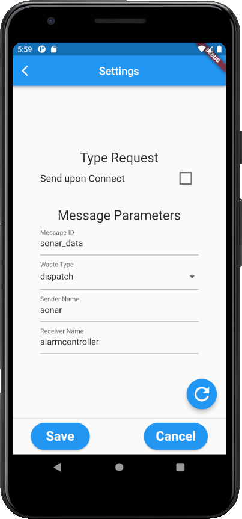
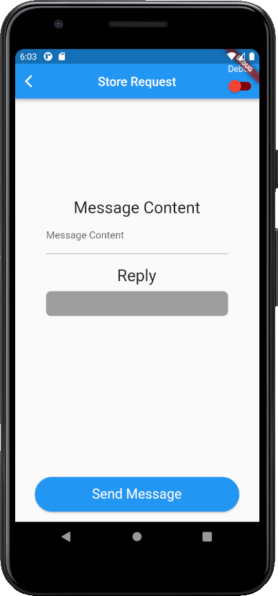
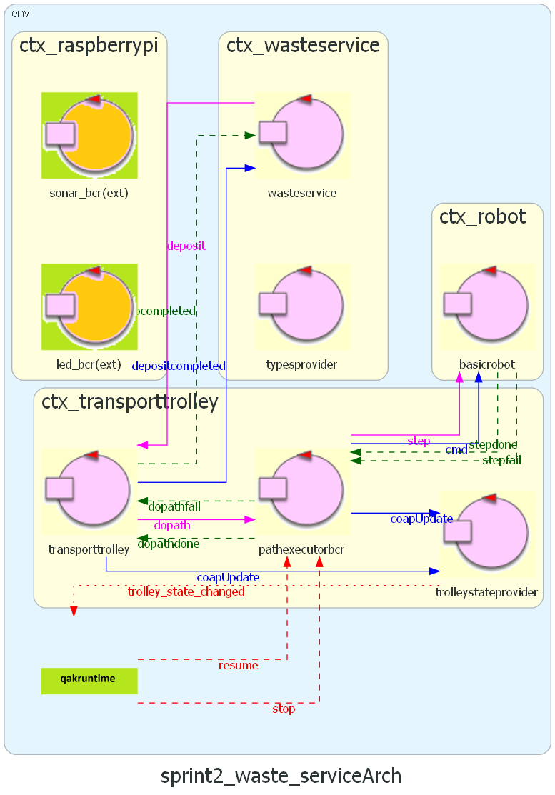
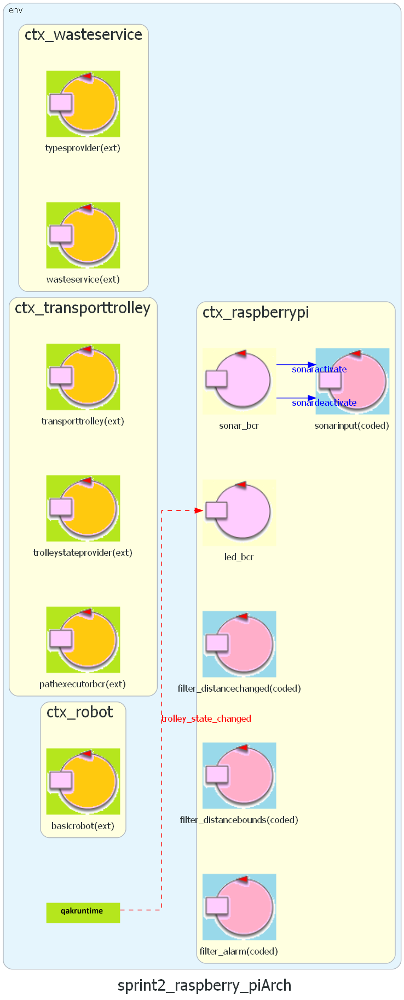
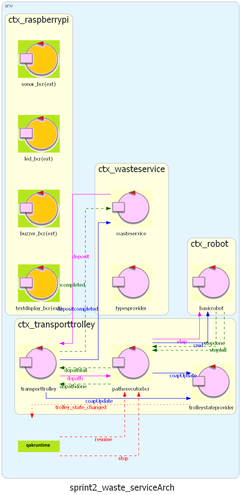
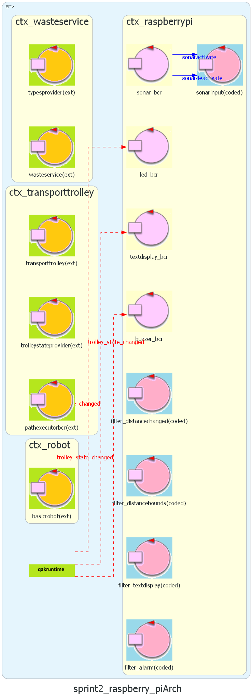
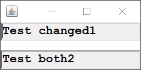

Project
The project contains all the software our team developed to achieve the Sprint2 SCRUM goal. We divided our work in 3 sub-sprintDefects Solution
SmartDevice
We upgraded the- message ID;
- message type;
- sender actor name;
- receiver actor name.
storerequestViews
 MapEditor
We upgraded theroomMapandmapConfigobjects loading from file and saving to file with path tracking from settings;- File errors handling;
- Persistent settings;
- Logger (to console and to file).
Logical Architecture
As the project is starting to grow considerably in size, we decided to split the system in 2 parts, one for each node:-
WasteService Core  QAK model: wasteservice_core_no_extension.noqak
-
WasteService RPi  QAK model: wasteservice_rpi_no_extension.noqak
Sprint2.1: WasteService Core
We upgraded theWS Core: Updated Logical Architecture
 QAK model: wasteservice_core.qakWS Core: Upgrades
The remarkable changes are the following:Stop/Resume feature
To support the stop/resume functionality, we modified the pathexecutor QAK actor (renamed to PathExecutorBCR):
When PathExecutorBCR detects a stop event, if it's performing a task
it finishes the current action, then enters the STOP state, which will
cause it to ignore any other request, until a RESUME event is detected.
In particular:
- We added a guard checking for stop events (
Transition t1 whenEvent stop -> state_stop) at the end of the following states:- state_idle (the state where the actor waits for path requests);
- state_do_move_forward;
- state_do_move_turn.
-
We added the state "
state_stopState state_stop { [# var PathTodo = pathut.getPathTodo() #] println("[PathExecutorBCR] Alarm detected, trolley stopped. Path to do: $PathTodo") } Transition t3 whenEvent resume -> state_resume -
We added the state "
state_resumeState state_resume { println("[PathExecutorBCR] Alarm retracted. Resuming...") } Goto state_next_move if [# MovesDone.length != TotPathMoves #] else state_idle
TransportTrolley State
When the Transport Trolley performs an action, arrives at HOME or
becomes stopped/resumed, its state changes and is notified to the rest
of the system, so that the interested components (e.g the Led) can
get updated.
To track the Transport Trolley state and make it COAP observable
since the QAK framework already supports COAP:
-
We created a new enum class
TransportTrolleyStateenum class TransportTrolleyState { NONE, HOME, MOVING, PICKUP, DUMP, STOPPED; companion object { fun parseFromMessage(s: String): TransportTrolleyState } }NB: The TransportTrolley state is different from the Led state. -
We added a call to update the COAP resource idicating the Transport Trolley
state
updateResource [# "transporttrolley(STATE)" #]inside the involved actors:- TransportTrolley
- PathExecutor
-
Created an actor that acts as an observer of the COAP
resource: the actor
TrolleyStateProviderobserveResource transporttrolley observeResource pathexecutorbcrand generates an event (that other actors can detect) whenever the state changes:onMsg(coapUpdate: coapUpdate(RESOURCE, VALUE)) { // Check if the state changed if [# wasteservice.TransportTrolleyState.parseFromMessage(payloadArg(1)) != TTState #] { [# TTState = wasteservice.TransportTrolleyState.parseFromMessage(payloadArg(1)) #] // Emit event emit trolley_state_changed: trolley_state_changed($TTState) } }
WS Core: Bug Fixes
simulateAction(),
by using delay() instead of Thread.sleep().
Reason: QAK actors of the same context run on the same thread, therefore when calling
Thread.sleep() they would get all blocked,
the TrolleyStateProvider too, preventing it from processing the coapUpdate().
Sprint 2.2: RadarSystem22.DomainBCR
Before implementing the Raspberry Pi QAK, we needed something to use the real/simulated components.To achieve this goal, we developed
Scripts and Programs
The RadarSystem22.domain project used some scripts and programs which were already provided by the customer: SonarAlone.c, led25GpioTurnOn.sh, led25GpioTurnOff.sh). However, we decided to recreate them using Python scripts, for a number of reasons:- portability, since they wouldn't depend on libraries like WiringPi which is not supported anymore and generates problems with new Raspberry OS versions;
- consistency and homogeneity, since this way they all use the python interpreter and packages. That also makes it possible to avoid for example problems related to the End-Of-Line characters, which are different from Windows and Linux (a bash script written on a Windows OS won't work in Linux unless the EOF characters get replaced);
- Ease of use and deployment, Python is easy to install and already shipped with Raspberry OS images. Python scripts also don't need to be compiled: this results in one less task during deployment.
-
sonarBCR.py - is used to get the distance (in CM) from the SC-HR04 component. It uses the GPIO 23 (Pin #16/40) as Trigger, and GPIO 24 (Pin #18/40) as Echo.
With theloopparameter (and optionally the delay) the script continuously prints the detected distance, until the user interrupts it. -
ledBCR.py - is used to turn ON/OFF a Led component or make it blink. It uses the GPIO 25 (Pin #22/40). The state (on / off / blink) must be passed as a parameter. When blinking, the script keeps running until the user interrupts it.
Led and Sonar Changes
We updated theILed interface to add the method blink()
which should make the Led to blink the led flash at intervals of time:
public interface ILed extends IDevice {
public void turnOn();
public void turnOff();
public void blink();
public LedState getState();
}
We implemented the mock version of the blink() method by
using a Thread which turns the Led ON and OFF at intervals of time delayed by
a number of milliseconds:
@Override // LedMock
public void blink()
{
if(getState().equals(LedState.BLINKING))
return;
super.blink();
blinker = new Thread(new Runnable() {
private boolean isOn = false;
@Override
public void run() {
while(getState().equals(LedState.BLINKING)) {
isOn = !isOn;
panel.setSize(isOn ? sizeOn : sizeOff);
panel.setBackground(isOn ? colorOn : colorOff);
panel.validate();
panel.repaint();
BasicUtils.delay(DomainSystemConfig.ledDelay);
}
}
});
blinker.start();
}
We also changed the concrete implementation of both Led and Sonar
in order to make them use our new python scripts.
/usr/bin/python3 -u ./ledBCR.py <on | off | blink [delay]> /usr/bin/python3 -u ./sonarBCR.py <loop [delay]>
DomainSystemConfig Changes
To make the system more customizable at runtime, we extended theDomainSystemConfig class too. In particular, we added:
sonarDelay- used to delay the sonar detections.-
ledDelayandbuzzerDelay- used to choose how quickly the led and buzzer must blink/beep. -
enableBuzzerandenableTextDisplay- used to enable/disable the usage of the buzzer and display components (since they're not specifically required by the customer). -
textLine1DelayandtextLine2Delay- used to limit the display refresh rate (may be different for each line).
Integration with Other Projects
In order to use the radarSystem22.domainBCR project in other projects (e.g. WasteService RPi), we firstly have to build the library:
./gradlew jar
Which generates a JAR under build/libs/. We then move it to
unibolibs/.
Finally we can add the following line under the dependencies, inside the
build.gradle of the project:
dependencies {
[...]
implementation name: 'it.unibo.radarSystem22.domainBCR-1.0'
}
And load the gradle changes.
Sprint 2.3: WasteService RPi
WS RPi: Updated Logical Architecture
 QAK model: wasteservice_rpi.qakWS RPi: RaspberryPi Device
The device used in our project is a Raspberry Pi 4 Model B:- 1.5 GHz 64-bit quad core ARM Cortex-A72
- 4 GB RAM
- standard 40 pin GPIO header
- on-board 802.11ac Wi-Fi
- Bluetooth 5.0
- full gigabit Ethernet
- [...]
Pin scheme and components
The Raspberry Pi base configuration we used for the project is the following:Setup
- ssh/vnc
- Make sure python is installed
WS RPi: Sonar
To implement the sonar part we based on the project unibo.sonarqak22, provided by the customer, and we integrated it with ourradarSystem22.domainBCR.
sonarSupportBCR Actor
lateinit var sonar : ISonar
init
{
println("[$name] Started.")
DomainSystemConfig.setTheConfiguration("RaspberryDomainConfig.json")
sonar = DeviceFactory.createSonar()
}
This actor iterates as long as the sonar is active, continuously getting
the detected distance and emitting a local stream event to the following
actor inside the pipeline.
sonarBuilder Object
createSonar()
that builds the pipeline for the sonar, with the following actors:
sonarinput(first) - the sonar data source;-
filter_distancebounds- coded actor that acts as a filter and drops messages that contains a distance which goes outside the bounds defined in DomainSystemConfig; -
filter_distancechanged- coded actor that acts as a filter and drops messages that contains a distance equal to the previous detection; -
filter_alarm(last) - coded actor that emits a STOP event (not local anymore) if the distance became less than DLIMT, or else emits a RESUME event if the distance became greater or equal to DLIMT.
SonarBCR Actor
WS RPi: Led
As per the sonar, we implemented the led part by using ourradarSystem22.domainBCR.
ledSupportBCR Object
fun createLed()
fun doLed(state: TransportTrolleyState)
LedBCR Actor
trolley_state_changed events, emitted by TrolleyStateProvider:
when this event is received, this actor updates the component state by calling doLed().
Sprint 2 Extensions
To enhance our project and customize it a little, given the fact that we had some spare components, we decided to extend the project with some extra features, in particular, we included:- a buzzer, to provide an auditory (besides the visual one provided by the Led) feedback for the Transport Trolley state;
- a display LCD1602, to display some extra information directly on the RaspberryPi device, such as the distance detected by the sonar and the Transport Trolley state as text.
Buzzer
The buzzer (TMB12A05) is a simple component, much similiar to the led, since it provides an output feedback, has only 2 states (ON/OFF) and requires just 2 pins to work: power and ground.Script: buzzerBCR.py
The scriptradarSystem22.domainBCR: Buzzer Component
The buzzer component is almost identical to the Led one. We declared anIBuzzer interface and then implemented the mock/concrete classes:
public interface IBuzzer extends IDevice {
public void turnOn();
public void turnOff();
public void turnIntermittent();
public BuzzerState getState();
}
To implement the mock we used the javax.sound library
to play a "beep" sound effect:
try {
URL url = new URL("https://www.soundjay.com/buttons/beep-09.wav");
clip = AudioSystem.getClip();
AudioInputStream ais = AudioSystem.getAudioInputStream(url);
clip.open(ais);
}
catch (Exception e) {e.printStackTrace();}
WS Core: buzzerSupportBCR Object
To integrate the buzzer component in the WasteService RPi project, we created a Kotlin object
fun createBuzzer()
fun doBuzzer(state: TransportTrolleyState)
WS Core: BuzzerBCR Actor
trolley_state_changed events, emitted by TrolleyStateProvider
when this event is received, this actor updates the component state by calling doBuzzer().
Text Display
The LCD display 1602 is an output component capable of displaying 16 characters on 2 different lines. Since its base interface is complex and requires many connections, it's often used with an I2C bus expander module, which require instead only 4 pins, two of which are the I2C RaspberryPi interface.Script: Text Display
The scriptradarSystem22.domainBCR: Text Display
To implement the TextDisplay component we first declared anITextDisplay interface:
public interface ITextDisplay extends IDevice {
public void setLines(String text1, String text2);
public String getLine1();
public String getLine2();
public void clear();
}
Then we implemented a mock version of the device, which creates a GUI with
2 text boxes to simulate the output of the display:
protected void configure()
{
textField1 = new TextField();
textField1.setEditable(false);
textField1.setColumns(16);
textField1.setFont(new Font(Font.MONOSPACED, Font.BOLD, 16));
textField2 = new TextField();
textField2.setEditable(false);
textField2.setColumns(16);
textField2.setFont(new Font(Font.MONOSPACED, Font.BOLD, 16));
frame.add(BorderLayout.PAGE_START, textField1);
frame.add(BorderLayout.PAGE_END, textField2);
}

Finally we implemented the concrete version which simply executes the
displayBCR.py script passing the text as parameters:
@Override
protected void textDisplayActivate(String text1, String text2)
{
String[] command = { "/usr/bin/python3", "-u", "./displayBCR.py", getLine1(), getLine2()};
ProcessBuilder builder = new ProcessBuilder(command);
String className = "[" + this.getClass().getSimpleName() + "]";
ColorsOut.out(className + " Line1: " + getLine1());
ColorsOut.out(className.replaceAll("(?s)(?<!\\\\S).(?!\\\\S)", " ") + " Line2: " + getLine2());
try { builder.start(); }
catch(IOException e) { System.out.println("[" + this.getClass().getSimpleName() + "] ERROR: " + e.getMessage()); }
}
WS Core: displaySupportBCR Object
To integrate the display component in the WasteService RPi project, we created a Kotlin object
fun createBuzzer()
fun doBuzzer(state: TransportTrolleyState)
WS Core: DisplayBCR Actor
trolley_state_changed events, emitted by TrolleyStateProvider:
when this event is received, this actor updates the second line of the display by
calling doDisplay().
WS Core: filter_textdisplay Actor
To write the detected distance on the first line of the display, we created a new coded actorfilter_alarm.
RadarSystem22: Radar GUI
Since our software house already had a project (developed by Michele Righi) capable of showing sonar information "in a fancier way", we considered its usage and analyzed if there was a way to adapt it and include it in our Waste Service project.The
The Radar GUI project is completely written in C with SDL2 and includes an interface to ease the networking communication, using UDP and TCP.
Example usage: run the radarGUI on a computer, and a client on a Raspberry Pi, which detects obstacles with the sonar module, and sends the data by using the networking interface.
We also already had the LCD display component.

Deployment
Until now we deployed our sistem using the Gradle JAR plugin. However, a better approach would be to use the distribution plugin: https://docs.gradle.org/current/userguide/distribution_plugin.html which allowsBuild System
To build the projects we used the Gradle distribution plugin, which allowed us to generate ZIP archives containing everything needed to run the system parts, by using the following command:
./gradlew distZip
This command will produce a ZIP archive under build/distributions/
Build WasteService Core
To ease the building of the
distZip {
archiveName "unibo.sprint2_wasteservice_core_WS.zip"
if (project.hasProperty("build_TransportTrolley")) {
archiveName "unibo.sprint2_wasteservice_core_TT.zip"
} else if (project.hasProperty("build_Robot")) {
archiveName "unibo.sprint2_wasteservice_core_RT.zip"
}
}
This way we are able to select the main of the distribution build, by
passing it as a parameter to the gradlew command. To make it
even easier to build the project, we created a script to automatize the build
of the 3 context:
build_WasteService_Core.bat
Build WasteService RPi
To build the
build_WasteService_RPi.bat
Deploy System
To deploy the WasteService RPi project on the Raspberry Pi device, we created a batch script to automatize the task:
deploy_WasteService_RPi.bat
This script performs the following actions:
- build the ZIP archive of the project for the distribution;
- ask the user the IP address of the target RaspberryPi;
- ask the password and copy the ZIP on the target RaspberryPi;
- ask the password again and setup the environment (remove pre-existent folder, unzip, give permissions to the runner script).
NB: more generally, the folder scripts/ contains executable batch scripts
for the most common and useful operations.